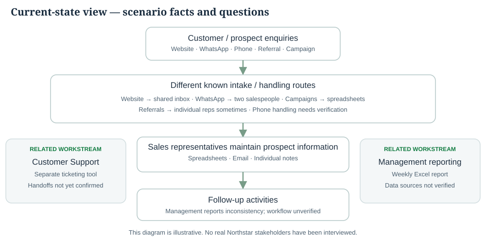
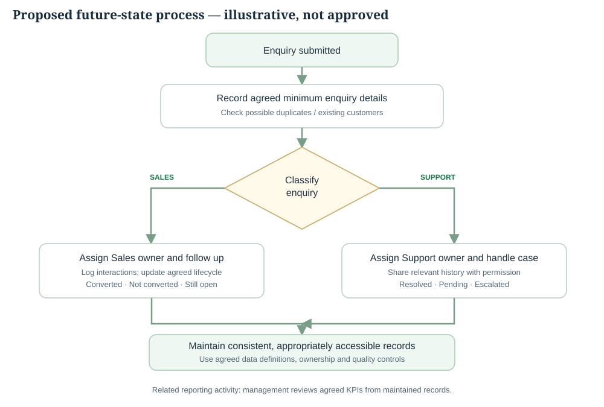

Artefact 003 · v0.1 · Working models
As-Is, Gaps & Proposed To-Be
Translate the fictional brief into a preliminary current-state view, distinguish reported issues from hypotheses, and propose a future business process without selecting software.
Validation boundary: These models are illustrative. No Northstar process has been observed. The Sales workflow, Support ticketing and management reporting are related activities; not every enquiry passes through all three.
Preliminary As-Is landscape

As-Is modelling based on supplied scenario details. Unknown handoffs and timings remain explicitly unverified.
Pain points and possible impacts
| Area | Reported / potential issue | Why it matters |
|---|---|---|
| Follow-up | Inconsistent follow-ups — reported | Possible late contact or missed opportunity |
| Customer information | Fragmented information — reported | Limited continuity and cross-team visibility |
| Channel intake | Unclear capture completeness — hypothesis | Potential untracked or incomplete enquiries |
| Sales / Support | Separate tools; data sharing unverified | Possible gaps in access to relevant context |
| Reporting | Reliability difficulties — reported | Harder KPI interpretation and decisions |
Initial gap analysis
| Current state | Desired state | Potential gap |
|---|---|---|
| Records spread across spreadsheets, email, notes | Appropriately shared, consistent records | Agreed maintenance, ownership, access and data standards |
| Enquiries enter through separate handling paths | Consistently captured, classified, assigned and tracked | Channel capture standards, handoff rules and exception controls |
| Weekly Excel report; reliability concerns | Repeatable, reconciled KPIs and reporting | Metric definitions, source reconciliation, data-quality checks |
Proposed To-Be process

Business-level design only. Classification rules, owners, response targets, data constraints and technical implementation require real-world validation.
Decision points that require agreement
- Minimum information to record at each channel
- How a repeat enquiry or existing customer is identified
- Sales versus Support classification and assignment rules
- Follow-up, escalation and reassignment expectations
- When and how customer history moves between teams
- Reporting definitions and data-quality checks
- Appropriate solution options and non-functional constraints
Not a completed implementation
No Salesforce configuration, automation, migrations, API testing, report reconciliation or measured business outcomes exist in this version. They are potential next-phase work, not achievements represented by these process diagrams.
Full analysis: Markdown working artefact.